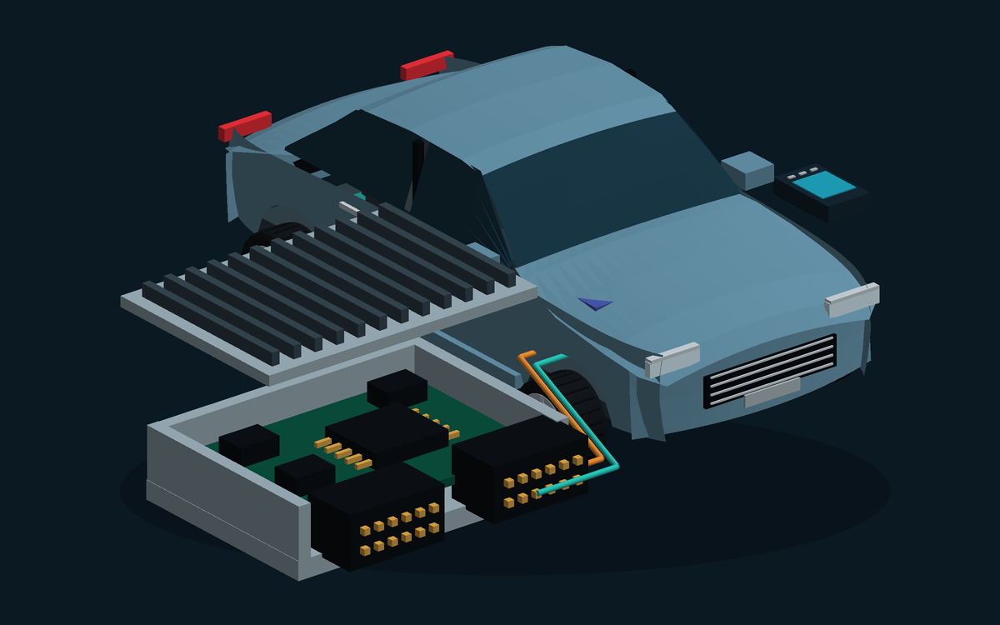

Керуйте й порівнюйте
Оберіть бензиновий, дизельний, HEV, PHEV або BEV варіант. Використовуйте кабіну, педалі й передачі або віртуального водія WLTC для підтримуваних конфігурацій.
КЕРУВАННЯ АВТОМОБІЛЕМ · ДАТЧИКИ · ДІАГНОСТИКА
Простежте сигнал від датчика до ЕБК, а потім прочитайте діагностичну відповідь.
Симулятор v0.9.10 · English / Українська

Ця версія працює на вашому комп’ютері з Python 3.10 або новішим. Завантажте її тут, а потім відкрийте локальний симулятор у браузері.
Python 3.10+ · Без додаткових пакетів Python · Працює автономно після завантаження
ZIP містить редаговані вихідні файли, довідкові посібники та засоби запуску. Контрольні суми завантажень
Linux: збережіть run.sh у папці, відкрийте в ній термінал і виконайте:
bash run.shЗалиште термінал відкритим. Симулятор відкривається за адресою http://127.0.0.1:8765. Для зупинки натисніть Ctrl+C у терміналі.
Windows: установіть Python 3.10 або новіший, розпакуйте всі файли OBDII_Lab.zip і відкрийте START_LAB.bat.
Експортуйте записи перед закриттям лабораторії: поточний сеанс зберігається в оперативній пам’яті.
Оберіть бензиновий, дизельний, HEV, PHEV або BEV варіант. Використовуйте кабіну, педалі й передачі або віртуального водія WLTC для підтримуваних конфігурацій.
Переглядайте встановлені блоки, вибірки датчиків, шляхи з’єднань і перетворення напруги у значення. Порівнюйте величини моделі з діагностичними відповідями.
Від’єднайте роз’єм, перевірте коди несправностей і простежте байти CAN / ISO-TP до показаного значення. Запишіть і експортуйте результат.